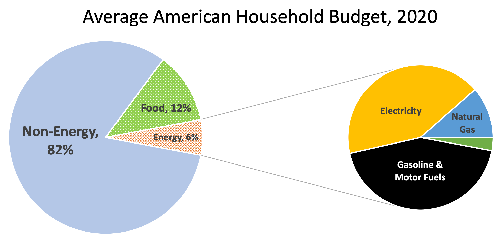
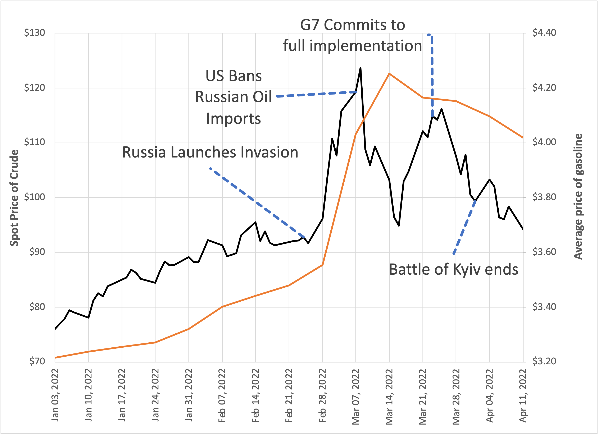
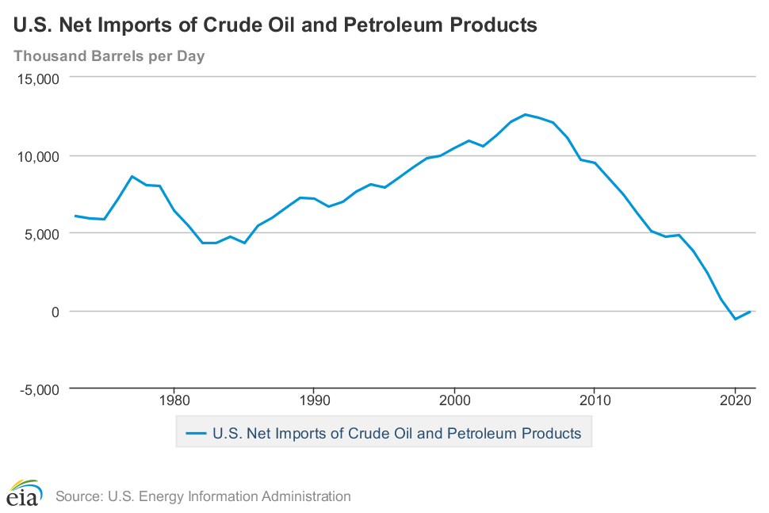

You can read Healing for free, and you can reach me directly by replying to this email. If someone forwarded you this email, they’re asking you to sign up. You can do that below.
If you really want to help spread the word, then pay for the otherwise free subscription. I use any money I collect to increase readership through Facebook and LinkedIn ads.
Thank you for reading Healing the Earth with Technology. This post is public so feel free to share it.
Today’s read: 10 minutes.
I’m issuing yet-another pseudopolitical diversion because it’s relatively easy to write about emerging stories. Plus, I’m coming off vacation and preparing my tax returns. But, the IPCC AR6 report is now fully released, so there’ll be plenty to write about in future installments.
To start with, let’s look at our last President with a science degree:
We are at a turning point in our history. There are two paths to choose. One is a path I’ve warned about tonight, the path that leads to fragmentation and self-interest. Down that road lies a mistaken idea of freedom, the right to grasp for ourselves some advantage over others. That path would be one of constant conflict between narrow interests ending in chaos and immobility. It is a certain route to failure.
…
Energy will be the immediate test of our ability to unite this nation, and it can also be the standard around which we rally. On the battlefield of energy we can win for our nation a new confidence, and we can seize control again of our common destiny.
…
The energy crisis is real. It is worldwide. It is a clear and present danger to our nation. These are facts and we simply must face them.What I have to say to you now about energy is simple and vitally important.
Point one: I am tonight setting a clear goal for the energy policy of the United States. Beginning this moment, this nation will never use more foreign oil than we did in 1977-- never1. From now on, every new addition to our demand for energy will be met from our own production and our own conservation. The generation-long growth in our dependence on foreign oil will be stopped dead in its tracks right now and then reversed as we move through the 1980s, for I am tonight setting the further goal of cutting our dependence on foreign oil by one-half by the end of the next decade -- a saving of over four and a half million barrels of imported oil per day.
Point two: To ensure that we meet these targets, I will use my presidential authority to set import quotas. I’m announcing tonight that for 1979 and 1980, I will forbid the entry into this country of one drop of foreign oil more than these goals allow. These quotas will ensure a reduction in imports even below the ambitious levels we set at the recent Tokyo summit.
Point three: To give us energy security, I am asking for the most massive peacetime commitment of funds and resources in our nation’s history to develop America’s own alternative sources of fuel -- from coal, from oil shale, from plant products for gasohol, from unconventional gas, from the sun.
I propose the creation of an energy security corporation to lead this effort to replace two and a half million barrels of imported oil per day by 1990.2 The corporation will issue up to five billion dollars in energy bonds, and I especially want them to be in small denominations so average Americans can invest directly in America’s energy security.
Just as a similar synthetic rubber corporation helped us win World War II, so will we mobilize American determination and ability to win the energy war. Moreover, I will soon submit legislation to Congress calling for the creation of this nation’s first solar bank which will help us achieve the crucial goal of twenty percent of our energy coming from solar power by the year 2000.3
These efforts will cost money, a lot of money, and that is why Congress must enact the windfall profits tax without delay. It will be money well spent. Unlike the billions of dollars that we ship to foreign countries to pay for foreign oil, these funds will be paid by Americans, to Americans. These will go to fight, not to increase, inflation and unemployment.
Point four: I’m asking Congress to mandate, to require as a matter of law, that our nation’s utility companies cut their massive use of oil by fifty percent within the next decade and switch to other fuels, especially coal, our most abundant energy source.
Point five: To make absolutely certain that nothing stands in the way of achieving these goals, I will urge Congress to create an energy mobilization board which, like the War Production Board in World War II, will have the responsibility and authority to cut through the red tape, the delays, and the endless roadblocks to completing key energy projects.
We will protect our environment. But when this nation critically needs a refinery or a pipeline, we will build it.
Point six: I’m proposing a bold conservation program to involve every state, county, and city and every average American in our energy battle. This effort will permit you to build conservation into your homes and your lives at a cost you can afford.
I ask Congress to give me authority for mandatory conservation and for standby gasoline rationing. To further conserve energy, I’m proposing tonight an extra ten billion dollars over the next decade to strengthen our public transportation systems. And I’m asking you for your good and for your nation’s security to take no unnecessary trips, to use carpools or public transportation whenever you can, to park your car one extra day per week, to obey the speed limit, and to set your thermostats to save fuel. Every act of energy conservation like this is more than just common sense, I tell you it is an act of patriotism.
President Jimmy Carter, “Energy and the National Goals - A Crisis of Confidence”, national address delivered 15 July, 1979
Wise words from a President who is not generally attributed with leadership qualities. This speech moved the needle because Congress responded to his call to action. There are several interesting points that I’ve footnoted below as reality checks. The speech was more prescient than you might imagine.
Recently, the popular-but-lazy press has found an all-too-familiar theme that ties political fortunes to current economics. Historically, I trace this to James Carville and the Clinton v. Bush Presidential election of 1992, where his key talking point, “The Economy, Stupid,” is often credited with Clinton’s victory.4 But the relationship between microeconomic factors and American political fortunes undoubtedly goes much further back, probably to Thomas Jefferson’s defeat of John Adams5. Moreover, it acknowledges that how voters feel is more important than what they think.
Rising gasoline prices are being branded by the Biden Administration as “Putin’s Price Hike” with predictable counterpunches by the Ridiculous Right.6 It is evident that politicians set long-term policies, not short-term prices, so any cause-and-effect relationship is spurious. But let’s examine (at a high level) how energy is related to happiness/voter sentiment and how the Russian war of aggression and the Western response have impacted energy prices.
First, let’s examine energy from the consumer’s perspective. The average American family budget is $61,334 per year, and it is spent like this:

There are a couple of takeaways: First, direct consumer energy purchases are a relatively small fraction of the budget. [Note that energy prices are indirectly part of the entire economy (crops need to be harvested, goods need to be transported etc., etc.), so rising energy prices are inherently inflationary, driving up “hidden” costs across the board.] Second, and more tellingly, direct energy expenses are equally divided between gasoline and electricity.
With this equivalence in mind, ask yourself, “Within 10 cents, how much did you spend on the last gallon of gas you purchased?” then ask yourself, “How much did you spend on the last kilowatt-hour of electricity you used?” Unless you’re a complete energy nerd, the first answer comes to mind quickly, while the last one is a head-scratcher that sends you to your utility bill. They’re also trick questions—You purchase gasoline directly and can move and store it for later use, so once you buy it, you own it. With electricity, the purchase is “metered”, with prices varying wildly by location and time of day because it needs to be generated as required, and you only pay for it after you use it. Just ask anyone living in Texas last winter what kind of problem that is!
Thus, from a pseudopolitical perspective, “energy prices” can be reduced to retail gasoline prices. “Pain at the pump” is not hyperbole. As one psychology paper7 concludes:
Interestingly, although rising gasoline prices lead to an immediate deterioration in subjective well-being, analyses of lagged prices suggest that well-being almost fully rebounds 1 year later and changes very little each year thereafter. Our contemporaneous estimates imply that rising gasoline prices generate well-being losses comparable to faltering labor market conditions, and likely offset some of the physical health benefits found in previous research.
Translation: Rising gasoline prices make consumers economically fearful in the short run, but they can adapt to the budget shock in the long run.
So, what’s happening to gasoline as Russian aggression has waxed and waned?

So, we observe a dramatic price increase for crude oil and gasoline in the US almost immediately after the Russian invasion. Was this due to an abrupt curtailment of supply? Probably not—this war isn’t like the Gulf Wars where suppliers are being attacked—Russia is the aggressor here. It was likely speculation and hoarding since the initial sanctions imposed by Western democracies excluded Russian oil, even in the US. Then, when the US formally banned the import of Russian oil, prices dropped. Again, speculation is a likely culprit since the ban's implementation removed all doubt about the future. Then, another bubble formed and popped. As the G7 and EU moved toward solidifying their coalition, prices rose until the meeting concluded with a broad agreement.
As of this writing, (wholesale) crude prices have dropped to pre-invasion levels, while (retail) gasoline prices have remained about 10-15% higher. This pattern is consistent with experience. It’s well-established that gasoline prices “go up like a rocket and come down like a feather.” Before the war began, prices were rising slowly because the economy was recovering in the wake of the pandemic.
Why did the speculators make the wrong call? If I knew for sure, I’d be rich! But I can offer a few speculations of my own. First, Russian oil is still flowing but is now politically contaminated. That label allows buyers to negotiate lower prices than on the open market because it must be “decontaminated” before being sold.8 Second, the pandemic is still with us and is still affecting China’s economy. This factor reduces demand. Finally, OPEC cartel members may be cheating, producing and selling more oil than agreed to take advantage of extraordinarily high prices.
So what about “Putin’s Price Hike”? It’s a reasonable political argument intended to focus on consumer anger and redirect voter pain toward an external enemy. But, neither the Russian dictator nor the American President has the power to affect the “pain at the pump”. While some policy choices, like a temporary reduction in gasoline taxes, might be considered to avoid the pain temporarily, reversing these policies as anxieties wane would have to be approached carefully to avoid backlash.
The policy choice that Biden has made is to release stored oil from the “Strategic Petroleum Reserve”. I’ve criticized that previously as entirely inadequate to compensate for the loss of Russian production, basically politically-motivated hype that has no impact. But it’s a great business model! Oil prices are now at a high-water mark, so the Government must have purchased the oil in reserve for less than it’s being sold. The money from the sale is deposited into an account that the Government can use to purchase replacement oil after supplies recover. Taxpayers only need to maintain the storage facilities (below-ground geologic formations located near refineries on the Gulf Coast). And, if the cause of the price hike is traced to speculators, then it’s doubly sweet! The speculators just got squeezed.
Now, back to my 1040A.
Net imports didn’t cross the 1977 level until 1997, and we’ve been below that mark since 2011. Source: EIA

The Synthetic Fuels Corporation lasted from 1980-to 1986.
Energy from non-fossil fuel sources was 19% in 2000, but <0.1% of that was solar. The dominant source was nuclear, at 11%.
I attribute the outcome to businessman Ross Perot and paleoconservative Pat Buchanan, neither of which had a real chance of winning the presidency. Still, both piled unrelenting criticism on the incumbent, Bush. But I digress.
See Fries’ Rebellion for an interesting historical perspective of economics during the Adams administration. This rebellion can trace its roots to the first Tea Party. It was an armed revolt of the Pennsylvania Dutch community!
I use “ridiculous” literally here, meaning “characterized by ridicule”.
C. Boyd-Swan & C.M. Herbst, Journal of Urban Economics 72 (2012) pp. 160–175
It turns out that Western countries can still buy Russian crude, so long as they don’t refine it. From Kilian, L, and Plante, M. D., “The Russian Oil Supply Shock of 2022”:
What changed is that much of the Russian oil that continues to be exported from Baltic and Black Sea ports at steep discounts is not delivered to refiners, as is customary. Instead, trading houses are purchasing the oil and keeping it in commercial storage in Europe, from where it may be potentially resold, bypassing financial sanctions. Buying oil for storage is not prohibited under current sanctions.